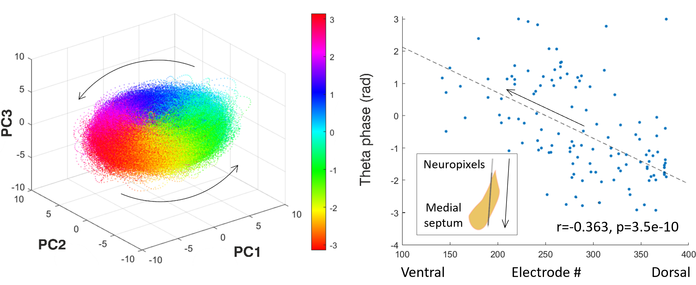
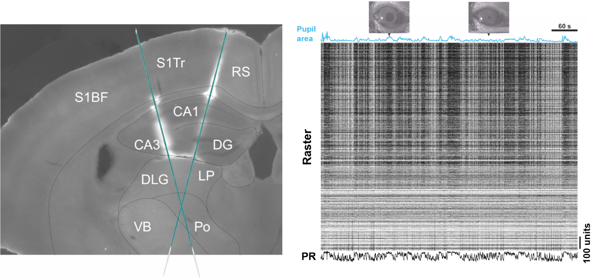
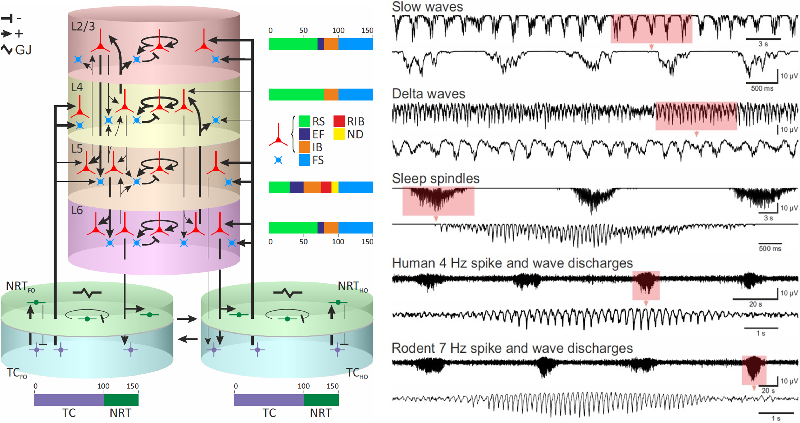
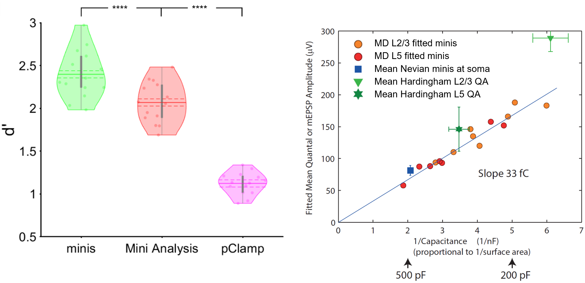

\(~~~~~~~~~~~~~~~~~~~~~~~~~~~~~~~~~~~~~~~~~~~~~~~~~~~~~~~~~~~~~~~~~~~~~~~~~~~~~~\) Current research \(~~~\) Past research \(~~~\) Github \(~~~\) Publications \(~~~\) CV

Martynas Dervinis, PhD#
Systems/computational neuroscientist based in Copenhagen
Interests: Cortical function, brain rhythms, epilepsy, datamanagement, open science, and neuroscience-informed AI
Current Research#
Function and Biophysical Mechanism of Neural Theta Wave#
 Illustration of Current Research. Image on the left: Principal component analysis of preliminary Neuropixels recordings in the medial septum reveals ring-like rotational dynamic in the theta (4-12 Hz) frequency range generated by robust repeated sequential activation of neurons. Image on the right: Individual neurons in the medial septum have their preferred global theta wave phase when they are more likely to fire. This preference in the medial septum is not distributed randomly but follows a dorsal-ventral gradient: Neurons located in the dorsal part of the medial septum tend to be active during an early phase of the global theta activity cycle while neurons in the ventral part tend to be active during the late phase of the cycle. Negative phase indicates the first half of the cycle. Arrows indicate the temporal evolution (spread) of neural activity.{kind=link}
After spending 16 years in the UK, I have relocated to the beautiful Danish city of Copenhagen and am currently working at the University of Copenhagen. My current research project focuses on understanding the function and the biophysical mechanism of the hippocampal theta (4-12 Hz) rhythm in rodents using neuronal population level approach.
At the outset of the project, I am going to carry out dual simultaneous extracellular electrode recordings in the hippocampus and the medial septum (the structure shown at the inset of the top-right image) while the animal is navigating through mazes of various spatial arrangements, freely moving in its cage, or sleeping. We, as a lab, are aiming to build a cell-type database detailing response fields, electrophysiological properties, and neural activity dynamics of medial septal neurons in relation to the hippocampal theta rhythm. In the later stage of the project, I am hoping to probe the role that different medial septal cell type populations play in generation and anatomical spread of theta waves across both the medial septum and the hippocampus using optogenetic techniques.
This work should deepen our knowledge about an under-researched and enigmatic brain area that is the medial septum. This area is thought to generate the hippocampal theta rhythm with our preliminary data indicating that medial septal neurons are activated in robust sequences that are repeated on the theta timescale. In the principal component space these sequences are revealed as a rotational dynamic with the cycle repeating on the theta timescale (4-12 Hz; the top-left image). In the anatomical space these sequencies appear as travelling theta waves that originate in the dorsal part of the medial septum and spread in the ventral direction across its entire extent (the top-right image). Further testing should lend more support to these findings and link them to the hippocampus.
Past Research#
Neuroscience Data Platform at the University of Bristol#
Schematic Representation of Bristol GIN Project. The image on the left shows its current stage where a data sharing platform and a version control system is being implemented. The image in the middle shows the next stage where a relational database will be implemented for rapid data queries. The image on the right shows how the system could evolve in the future by implementing a cloud computing environment.{kind=link}
Open access to data, often generated by multi-group collaborations with large datasets, is increasingly central to scientific endeavour. It conveys many benefits including research transparency, efficiency and collaboration and is becoming a requirement for many journals and grant funding bodies. Therefore, scientists need easy, cost effective and user-friendly systems to make data accessible to collaborators and the public and transform research culture. We have tested several data architecture systems for use with neuroscience datasets and selected GIN as the most flexible, easy to use and reliable system. We have adapted this for use within University of Bristol (UoB) IT systems. Bristol-GIN and the accompanying Bristol Neuroscience Data Guide are under development and scheduled to be launched at the end of the year 2024.
Among data sharing platforms available to neuroscientists GIN is unique in the range of benefits it offers to researchers and the wider community:
It expands accessibility by moving the data outside the confines of local research institution managed shares.
In turn this eases both internal and external collaboration.
A well-thought-out synchronisation process guarantees safe and seamless integration of remote and local repositories.
It increases data safety as the separation of local and remote repository copies prevents unintended interference between team members working on the same repository. The remote repository can also act as a back-up copy.
Its version control allows rolling back to any previously recorded state of the repository in the unfortunate yet common case of newly introduced changes not working as intended.
It increases data security by granting fine-grained control to repository owners over the access privileges of their collaborators.
It increases data storage efficiency by achieving perfect data deduplication.
It increases data transparency by the dint of version control which records repository changes. Repository history can be inspected by collaborators at any time, by reviewers during the publication process, and by colleague scientists and the public immediately after the publication of research outcomes generated using the repository.
GIN greatly expands the scope of project management. The personal investigator can have an oversight and administrative rights over repositories generated by the lab. He or she can require repositories to have a particular structure allowing the research process and outcomes to be easily examined in the remote repository. Moreover, multiple repository branches can be easily spawned with the aim of separating different aspects of repository processing (e.g., data collection, code development, data analysis) that can be overseen by different sub-teams.
It increases published data visibility by offering the digital object identifier (DOI) service so data repository can be easily cited and searched.
GIN is open source, can be further developed, and, therefore, possesses flexibility. It allows future extension of the system by augmenting it into a database integrated with bespoke data analysis tools.
Our goal is to develop Bristol-GIN to become UK-GIN, providing data management services for neuroscience research groups and other adjacent labs across the country. We intend to expand this service by developing a database that would allow data queries based on any relevant data/metadata parameter across repositories. This major development would make it possible to further build a cloud programmable layer dedicated to executing bespoke data analysis workflows integrated with the database and run by teams of neuroscientists. Once fully implemented, this data management system would embed open science, team science, and big science as the default approach for all UK Neuroscience.
Dual Extracellular Electrode Recordings in Mouse#
 Recording Brain Activity and Animal's Level of Arousal. The image on the left shows a coronal mouse brain section with Neuropixels silicon probe tracks. The image on the right shows a data recording interval with pupil area size blue trace at the top, the spiking activity of neurons captured by two silicon probes in the middle, and the combined firing rate of all neurons at the bottom. Abbreviations: Barrel fields of the primary somatosensory cortex (S1BF), trunk area of the primary somatosensory cortex (S1Tr), retrosplenial cortex (RS), cornu ammonis (CA), dentate gyrus (DG), dorsolateral geniculate nucleus (DLG), lateral posterior nucleus (LP), ventrobasal complex (VB), posterior nucleus (Po), population rate (PR).{kind=link}
Neural activity can be broadly divided into fast and slow types. The former consists of neuronal cell membrane potential fluctuations occurring on the timescale of milliseconds. This is the timescale that the brain uses to carry out computations and, therefore, to produce perception and cognition. On the other hand, slow type activity consists of neuronal membrane potential fluctuations occurring on the timescale of seconds. The slow activity is typically thought to underlie attentional processes and brain state transitions and, therefore, is considered to be of non-computational nature. Spontaneous neural activity dynamic on this particular timescale was the subject of my first postdoc research project.
In our research we used state of the art high density Neuropixels extracellular electrodes to simultaneously record local field potentials and spiking activity of hundreds of neurons. The top-left image shows a coronal slice of the mouse brain with fluorescent tracks indicating two electrodes inserted at different locations in the left hemisphere, spanning approximately 4 mm of the brain tissue each, and recording activity in cortical, hippocampal, and thalamic regions. Spiking activity yielded by these recordings can be represented as a raster image shown on the top right with black stripes representing action potentials (spikes) generated by individual neurons. Activity of individual neurons can also be pooled together to generate population firing rates across individual brain areas.
In addition to neural activity recordings, we also imaged the animal’s pupil. The size of the pupil area is often monitored in neuroscience research as it indicates the animal’s level of arousal. Large pupil is indicative of a high arousal state and increased motor activity, while the small pupil is associated with low levels of arousal and quiescence. Pupil size measurements allow us to link neural activity with fluctuations in levels of arousal. These fluctuations are known to occur on the slow (~0.3 Hz) and infra-slow (~0.03 Hz) timescales and are strongly correlated with neural activity fluctuations in the same frequency range. Pupil signal, therefore, is a critical indicator when studying neural activity dynamics on the timescale of seconds.
Our preliminary findings indicated that neural activity dynamic on the slow and infra-slow timescales was tightly coupled to animal’s arousal states, brain area’s position within the classical information processing hierarchy (starting with low level sensory thalamic areas and ending with high-level association areas like the hippocampus), and the brain area’s tendency to participate in one of the large-scale networks established by human brain imaging studies (the default mode network versus the task positive network). A manuscript describing these findings is currently under preparation.
Simulations of Corticothalamic Neural Network Activity#
 Simulations of Physiological Sleep Rhythms and Absence Seizures. The image on the left shows a schematic representation of the corticothalamic neural network computational model with separate cortical and thalamic subnetworks and connections between them. The image on the right shows simulated electroencephalogram traces that the model produces in different physiological and pathological states. Abbreviations: Cortical layers 2 and 3 (L2/3), 4 (L4), 5 (L5), and 6 (L6), nucleus reticularis thalami (NRT), thalamocortical nucleus (TC), first order (FO), higher order (HO), regular spiking cell (RS), early firing cell (EF), intrinsically bursting cell (IB), repetitive intrinsically bursting cell (RIB), network driver cell (ND), fast spiking cell (FS), and electrical gap junction (GJ). + and - indicate excitatory and inhibitory synapses, respectively.{kind=link}
A typical absence is a non-convulsive epileptic seizure that is a sole symptom of childhood absence epilepsy. It is characterised by a generalised hyper-synchronous activity (2.5-5 Hz) of neurons in the corticothalamic network that manifests as a spike and slow-wave discharge in the electroencephalogram. Although childhood absence epilepsy is not benign, its physiological basis is not well understood.
In an attempt to make progress regarding the mechanism of spike and wave discharges, I built a large-scale computational model of the corticothalamic network for my PhD thesis (shown in the image on the top left). The model consisted of Hodgkin-Huxley type physiologically realistic neurons that are well suited to model rhythmic behaviour of neural systems. For computational reasons these neurons were reduced to single compartments in the thalamus and double compartment models in the neocortex. A detailed realistic network connectivity pattern was used that had been derived from the literature survey.
The resulting model replicated key cellular and network electric oscillatory behaviours as commonly reported in the literature, as well as routinely observed in the neural activity recordings in sleeping or anaesthetised animals in our lab. Simulations of network oscillations are shown in the encephalograms on the top right. These oscillations included delta waves (1-4 Hz) characteristic of deep stages of sleep, slow waves (<1 Hz) and the sleep spindles (6.5-14 Hz) typically observed in early stages of the sleep cycle. The model would transition between different oscillatory behaviours in response to changes in the input resistance of neuronal membranes mimicking physiological processes observed during sleep in humans and animals. Crucially, when various pathological changes were introduced, simulated desynchronised neural activity characteristic of wakefulness would start producing regular highly synchronous spike and wave discharges that occur during human (4 Hz) and rodent (7 Hz) absence seizures. The construction of this computational model led us to device a single theoretical framework to understand childhood absence epilepsy and to summarise decades of detailed experimental work in both humans and animals.
The first version of this model was presented in my PhD thesis and, not withstanding certain limitations, allowed to model spike and wave discharges as observed in humans. The second version of the model fixed earlier limitations and extended its application to animal models of spike and wave discharges. Description of the second version of the model has been published in Paper 1 (sleep waves) and Paper 2 (absence seizures). The Neuron code describing version 1 (used in my PhD thesis) and version 2 (used in the published articles) of the model is available on Github.
Analysis Software Development for Intracellular Recordings#
 Detecting excitatory postsynaptic potentials in the central synapse and performing quantal analysis with 'minis'. The image on the left shows the performance (d') of 'minis' software and other two most commonly used algorithms (Mini Analysis and pClamp) in the field of synaptic function research in detecting extracellular postsynaptic potentials in cortical pyramidal cells. The image on the right shows the quantal analysis results produced in the same type of cells by 'minis'. The amplitude (quantal size) of minis turns out to be inversely proportional to the cell capacitance (size) giving the estimate of the electrical size of synapse approximately equal to 31.5 femtocoulombs (the slope of the line via the origin). Abbreviations: Cortical layers 2 and 3 (L2/3), and 5 (L5). **** indicates (highly) significantly different at p ≤ 10-5 level, paired t-test.{kind=link}
Miniature postsynaptic potentials or currents (also known as minis) commonly occur across many types of synapses of the central nervous system and are caused by spontaneous release of neurotransmitter from presynaptic vesicles. Measurements of minis’ amplitudes, rise times, and frequencies are widely used in neuroscience research to assess the state of synaptic function. However, accurate detection of minis is difficult due to larger minis overshadowing smaller ones and due to many smaller minis being difficult to distinguish from membrane potential physiological noise fluctuations. As part of our work to devise an accurate method to estimate the electrical size of the central synapse, we have developed a software (called ‘minis’) that can detect spontaneous postsynaptic potentials reliably well.
As part of this effort, we compared the performance of ‘minis’ to the two most widely used algorithms in the field of synaptic function research: ‘Mini Analysis’ (Bluecell) and pClamp (Molecular Devices). The image on the top left shows the overall performance (d’) of the three algorithms for detecting simulated excitatory postsynaptic potentials. d’ is a common measure of signal detection performance that combines both sensitivity and specificity of signal detection. ‘minis’ shows a superior performance compared to the other two algorithms. More detailed comparisons are available in the benchmarking-dedicated manuscript.
The ‘minis’ software can be used to detect postsynaptic potentials and spikes but can also be used to perform the quantal analysis in the central synapse. It does it by taking noise recordings in the pharmacologically silenced somatic whole-cell patch clamp recordings and superimposing them with simulated minis (using the genetic algorithm) until the ‘noise + simulated minis’ voltage trace roughly corresponds to the ‘noise + real minis’ recording in terms of amplitude and rise time distributions of detected minis-like events. In this way we can use the simulated minis distribution (3D distribution in terms of amplitude * rise time * frequency) as a proxy for the real minis distribution. The mean amplitude of simulated events turns out to be inversely proportional to the capacitance (or size) of neurons as shown in the top-right image and as predicted by the capacitor theory. By fitting this relationship with a line gives us an estimate of the electrical size of the excitatory cortical synapse which is approximately equal to 31.5 femtocoulombs (the slope of the line via the origin) of synaptically injected charge. A manuscript describing the quantal analysis method implemented in ‘minis’ is available online.
Transcranial Magnetic Stimulation Studies in Humans#
I started my academic career as a cognitive neuroscientist and worked as a Research Assistant in a transcranial magnetic stimulation (TMS) lab. During this time I designed and implemented experiments investigating neural mechanisms of attention, spatial cognition, and awareness in humans. I was involved in the following projects:
Timecourse of mental number line processing in frontal and parietal cortices.
The role that awareness and the geniculostriate visual pathway play in triggering shifts of visual attention.
Control of spatial attention by parietal lobes: visual pathways and timing.